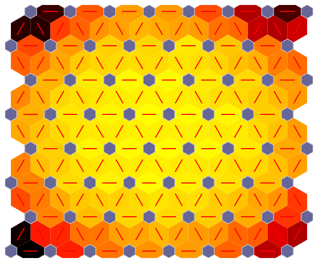

Cupy Implementation#
[ ]:
!pip install --upgrade NNSOM
Requirement already satisfied: NNSOM in /usr/local/lib/python3.10/dist-packages (1.6.8)
Collecting NNSOM
Downloading nnsom-1.6.9-py3-none-any.whl (32 kB)
Installing collected packages: NNSOM
Attempting uninstall: NNSOM
Found existing installation: NNSOM 1.6.8
Uninstalling NNSOM-1.6.8:
Successfully uninstalled NNSOM-1.6.8
Successfully installed NNSOM-1.6.9
[ ]:
from NNSOM.plots import SOMPlots
You are using GPU acceleration with Cupy
[ ]:
# Data Prep.
# Generate a random DataFrame with 10 features and 15000 samples
import numpy as np
np.random.seed(42) # For reproducibility
data = np.random.rand(30000, 100)
Rows = 8
Dimensions = (Rows, Rows)
som = SOMPlots(Dimensions)
som.init_w(data)
som.train(data)
Beginning Initialization
Current Time = 17:58:28
/usr/local/lib/python3.10/dist-packages/NNSOM/som_gpu.py:110: UserWarning: Without normalization function: SOM training may be inefficient if you are not normalized.
x = self.normalize(x, norm_func)
Ending Initialization
Current Time = 17:58:33
Beginning Training
Current Time = 17:58:33
/usr/local/lib/python3.10/dist-packages/NNSOM/som_gpu.py:213: UserWarning: Without normalization function: SOM training may be inefficient if you are not normalized.
x = self.normalize(x, norm_func)
50
Current Time = 17:58:37
100
Current Time = 17:58:37
150
Current Time = 17:58:38
200
Current Time = 17:58:38
Ending Training
Current Time = 17:58:38
[ ]:
clust, dist, mdist, clustSizes = som.cluster_data(data)
/usr/local/lib/python3.10/dist-packages/NNSOM/som_gpu.py:324: UserWarning: Without normalization function: SOM training may be inefficient if you are not normalized.
x = self.normalize(x, self.norm_func)
[ ]:
data_dict = {
"data": data,
"clust": clust,
}
[ ]:
import matplotlib.pyplot as plt
%matplotlib inline
[ ]:
fig, ax, patches, text = som.plot('hit_hist', data_dict)
plt.show()
[ ]:
fig, ax, patches = som.plot('neuron_dist')
plt.show()
